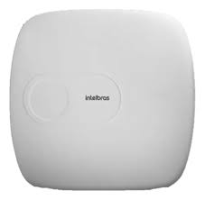

|  |
SAMT 4010 RFEspecificações PrincipaisZonas de Alarme:Suporta até 10 zonas mistas (com fio e sem fio), permitindo a configuração de diferentes áreas de proteção. Tecnologia Sem Fio: Compatível com dispositivos sem fio, facilitando a instalação e expansão do sistema de alarme. Comunicação RF: Opera em frequência de rádio 433,92 MHz, garantindo comunicação confiável com sensores e dispositivos sem fio. Arme e Desarme: Possui modos de arme total e parcial, permitindo flexibilidade na ativação do sistema de alarme de acordo com a necessidade do usuário. Notificação de Eventos: Suporta notificação de eventos via discagem para telefones fixos e celulares, garantindo que o usuário seja informado rapidamente em caso de ativação do alarme. Relatório de Eventos:Gera relatórios de eventos e pode armazenar informações sobre as ativações e desativações do sistema. Pânico e Emergência: Possui botões de pânico e emergência, oferecendo uma camada adicional de segurança em situações críticas. Saídas PGM: Equipado com saídas programáveis (PGM) para controlar dispositivos externos, como sirenes, luzes e outros dispositivos de automação. Sirene Interna: Inclui sirene interna para alertas sonoros em caso de disparo do alarme. Backup de Bateria: Suporte para bateria de backup, garantindo a operação contínua do sistema de alarme em caso de falha de energia.. Expansibilidade: Compatível com módulos de expansão, permitindo aumentar o número de zonas e funcionalidades do sistema. Design Compacto: Design compacto e discreto, adequado para diferentes tipos de ambientes. Quer Comprar ou saber mais informações? Contacte-nos! |